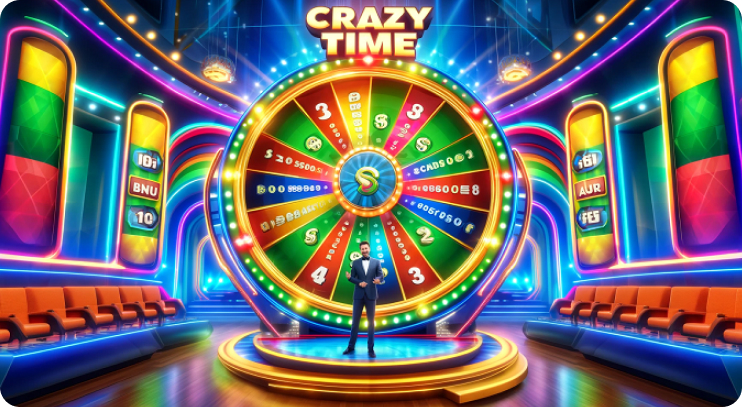

Crazy Time Statistics
Crazy Time is one of the most thrilling live casino games, offering players a mix of excitement and unpredictability. Every day, players eagerly track the spin history to see which segments and bonus rounds have been activated. Spin results often help players identify patterns or trends, even though outcomes are determined by a random number generator (RNG). Keeping an eye on today’s spin results can provide valuable insights for your betting strategy.
Top Multipliers Achieved
One of the most enticing aspects of Crazy Time is the potential for enormous multipliers. From bonus rounds like Cash Hunt and Pachinko to the epic Crazy Time bonus itself, the game often delivers impressive payouts. Multipliers can reach up to 20,000x, making it one of the most rewarding live casino games available.
Players love to share their success stories when they hit incredible multipliers. Whether it’s a 100x from Coin Flip or a 10,000x in Crazy Time, these moments demonstrate the sheer excitement and possibilities the game offers. Tracking recent multipliers can also give players an idea of the game’s volatility on any given day.
Big Wins Highlighted
Every day, Crazy Time players achieve big wins that make headlines in the gaming community. These wins often come from the bonus rounds, where multipliers can stack and turn small bets into massive payouts.
For instance, a player betting modestly on Cash Hunt might see their bet explode in value after landing a high multiplier. Similarly, Pachinko’s double features can lead to extraordinary wins. Highlighting these big wins inspires both new and experienced players, showing them the game’s potential while reminding them to play responsibly.
A Look at Crazy Time’s Historical Data
Crazy Time has been captivating players since its release, offering a unique combination of live entertainment and interactive features. Its history is filled with notable events, such as record-breaking multipliers and unforgettable moments in live broadcasts.
Studying the game’s historical data can also provide insights into its mechanics and probabilities. While every spin is independent, historical trends can help players understand the game’s frequency of bonus rounds and payouts over time. This information is valuable for those crafting their strategies or simply curious about how the game has evolved.
Understanding the RTP in Crazy Time
The Return to Player (RTP) rate is a critical factor for anyone playing Crazy Time. The game’s RTP averages 96.08%, meaning that, theoretically, players can expect to receive this percentage of their wagers back over a long period. However, RTP varies depending on the segments you bet on:
- Number segments like 1 or 2 have a higher probability of winning but offer smaller payouts.
- Bonus segments like Crazy Time or Pachinko have a lower RTP but much larger potential rewards.
Understanding these dynamics helps players make informed decisions about their bets. Balancing your risk and reward preferences is key to enjoying the game responsibly.
Tracking Crazy Time Outcomes
For players who want to stay on top of their game, tracking spin outcomes is an invaluable tool. Many enthusiasts log their results to observe patterns, such as which segments appear more frequently.
Modern trackers provide detailed statistics, including:
- Frequency of bonus rounds.
- Distribution of multipliers.
- Average intervals between major payouts.
These tools offer a deeper understanding of the game, even though randomness ensures no two sessions are alike. By combining data with a well-thought-out strategy, players can enhance their overall experience.
Best Tools for Monitoring Crazy Time Statistics
Several third-party trackers and tools have been developed to help players monitor Crazy Time statistics. These services display real-time data, making it easier for players to analyze trends and adjust their strategies.
Some of the top Crazy Time tracking tools include:
- CrazyTimeTracker.com – Provides live updates and detailed game statistics.
- SpinAnalyzer – Offers historical data and spin outcome trends.
- WinBigStats – Tracks big multipliers and highlights recent big wins.
While these tools are not affiliated with the game’s developer, they offer valuable insights for those who enjoy diving into the numbers. Always use these resources as guides, not guarantees, to maintain a healthy approach to gambling.